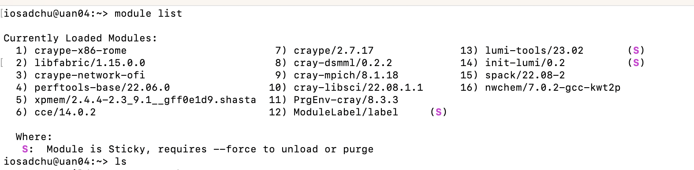
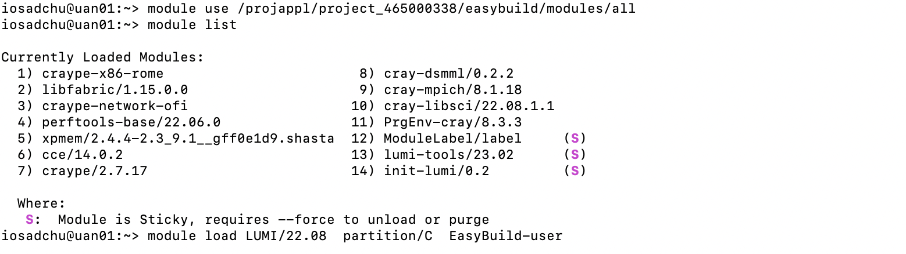

Programs on LUMI
Machine learning on top of PyTorch and Tensorflow
Image classification - ResNet
Object recognition and XFMR translation - SSD, XFMR
Scientific software suites - Gromacs (molecular dynamics), CP2K (quantum chemistry) and ICON (climate science)
Weather prediction application - GridTools allowing measures stencil-based
etcetera
More information about installed software and how to install software yourself can be found in the LUMI documentation.
The list of available programs can be found in LUMI Software Library. There can be also found license information - whether the program is free to use, requires pre-registration, or the user must provide own license.
First time use
To be able to use a program user has first to install it. Installation can be done by spack or by EasyBuild. The list of available programs in EasyBuild can be found in LUMI Software Library as well as installation instructions. List of programs which can be installed by spack can be looked by spack list command. The same program can be installed by both spack and EasyBuild.
There are two possible places where programs can be installed - user’s $HOME or project directory. The latest is recommended, sines other user of the project will be able to use installed programs as well. Moreover $HOME size is limited by 20GB. More about data storage at LUMI and storage billing.
Project XXX number can be found in ETAIS as Effective ID.

It is a good practice to add place, where programs will be installed into your .profile or .bashrc file. To do this give a command:
echo "export EBU_USER_PREFIX=/project/project_XXX" >> .bashrc
where XXX is a project number.
To install programs into use the following commands:
export EASYBUILD PREFIX=$HOME/easybuild
export EASYBUILD BUILDPATH=/tmp/$USER
Program installation
Installation by Spack
Initialize spack:
export SPACK_USER_PREFIX=/project/project_XXX/spack module list
where project
XXXnumber can be found in ETAIS asEffective ID.after user should load the following modules:
module load LUMI/YYY partition/ZZZ module load spack/RRR
where
YYY- version of LUMI, will appear in module list.
PartitionZZZis determined depending on CPUs (partition/C) or GPUs (partition/G) will be used.RRR- version of spack, will appear in the module list.
The entire list of programs available for installation by spack, can be viewed by command:
spack list
The list will be too long, so better to search for certain program by command:
spack list program_name
where the whole name or part of it is given.
NB! spack is insensitive to caps.
Check what flags should be added:
spack info program_name

Program installation is made by command:
spack install program_name@version%compiler@version +flag(s) ^forced_dependencies
where
flagis an installation options taken from variants of spack info see above. It is recommended to try thecce(Cray Compiler Edition) and for MPI dependent software to force thecray-mpichdependency.for example:
spack install nwchem@7.0.2%cce@15.0.1 +openmp ^cray-mpich@8.1.25
or
spack install kokkos+rocm+debug_bounds_check amdgpu_target=gfx90a %gcc@11.2.0 Refresh the module list spack module tcl refresh -y
For more details see LUMI guide.
NB! Program installation will require time up to hours.
When program is already installed user should load it before use by commands:
module load program_name
Installation by EasyBuild
To install program with EasyBuild, initialise it by following commands:
module use /projappl/project_XXXX/easybuild/modules/all module list
where project
XXXnumber can be found in ETAIS asEffective ID.after user should load the following modules:
module load LUMI/YYY partition/ZZZ module load EasyBuild-user
where
YYY- version of LUMI that can be found at program’s page in LUMI Software Library.
Sometimes partitionZZZis determined in the description of the program in LUMI Software Library. In case it is not, partitionZZZis used depending on CPUs (partition/C) or GPUs (partition/G) will be used.
After EasyBuild is loaded user can install the program needed by command
eb.eb `program_eb_file`
NB! The full name of
program_eb_fileas well as some additional flags needed for installation can be found at program’s page in LUMI Software Library.NB! Program installation will require time up to an hour.
When program is already installed user should load it before use by commands:
module load program_name
Loading program & adding modules into slurm
When program is already installed, user should load it before use or add into slurm script. If program was installed by spack the following commands should be given:
export SPACK_USER_PREFIX=/project/project_XXX/spack
module load LUMI/YYY partition/ZZZ
module load spack/YYY
module load program_name/VVV
where XXX is a project number, and can be found in ETAIS as Effective ID.
YYY - version of LUMI, will appear in module list.
Partition ZZZ is determined depending on CPUs (partition/C) or GPUs (partition/G) will be used.RRR - version of spack, will appear in the module list.
VVV - version of program, will appear in the module list.
if programs was installed by EasyBuild the following commands should be given:
module use /projappl/project_465000338/easybuild/modules/all
module load LUMI/YYY partition/ZZZ
module load EasyBuild/
module load program_name/VVV
where XXX is a project number, and can be found in ETAIS as Effective ID.
YYY - version of LUMI, will appear in module list.
Partition ZZZ is determined depending on CPUs (partition/C) or GPUs (partition/G) will be used.RRR - version of spack, will appear in the module list.
VVV - version of program, will appear in the module list.
Examples of slurm scripts can be found here.